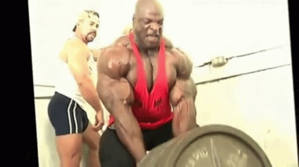

Shilles "Yeah buddy"-program
Push / Pull / Legs — Cirka 1 timme per pass
⭐️ Generella riktlinjer:
- Syfte: Muskelvolym (hypertrofi)
- Passlängd: 45–60 min
- Träningsfrekvens: 2-3 dagar/vecka
- Tempo: Kontrollerad excentrisk fas (~2–3 sek), explosiv koncentrisk
- Vila: Basövningar 60–90 sek, Isolationsövningar 30–60 sek
- Progression: Försök öka vikt eller reps varje vecka
- Superset: Två övningar utförs direkt efter varandra utan vila emellan, för att spara tid och öka intensiteten. Vila först efter båda övningarna är klara.
📅 Upplägg per vecka:
| Dag | Pass |
|---|---|
| Måndag | Push (Bröst, axlar, triceps) |
| Onsdag | Pull (Rygg, biceps) |
| Fredag | Legs (Ben + core) |
🏋 Push – Bröst, axlar, triceps + core
- Bänkpress / Hantelpress
4 set x 8–12 repsBasövning (Vila: 60–90 sek)
- Axelpress (hantel eller
skivstång)
3 set x 10–12 repsBasövning (Vila: 60–90 sek)
- Lutande hantelpress
3 set x 10–12 repsBasövning (Vila: 60–90 sek)
- Sidolyft med hantlar
3 set x 15–20 repsIsolation (Vila: 30–60 sek)
- Triceps pushdown
3 set x 12–15 repsIsolation (Vila: 30–60 sek)
- Overhead triceps extension
2–3 set x 12–15 repsIsolation (Vila: 30–60 sek)
-
Core-superset:
💪 Pull – Rygg, biceps + core
- Pull-ups / Latsdrag
4 set x 8–12 repsBasövning (Vila: 60–90 sek)
- Skivstångsrodd /
Hantelrodd
4 set x 10–12 repsBasövning (Vila: 60–90 sek)
- Sittande kabelrodd
3 set x 10–12 repsBasövning (Vila: 60–90 sek)
- Face pulls
3 set x 15–20 repsIsolation (Vila: 30–60 sek)
- Hantelcurls / Stångcurls
3 set x 12–15 repsIsolation (Vila: 30–60 sek)
- Hammercurls
2–3 set x 12–15 repsIsolation (Vila: 30–60 sek)
-
Core-superset:
🦵 Legs – Ben + core
⚽️ Obs! Under en intensiv vecka med många matcher/träningar, rekommenderas att du hoppar över benpasset för att undvika överbelastning och ge benen tid för återhämtning. Du kan även hoppa över det här passet helt om du vill träna två gånger i veckan.
- Knäböj / Benpress
4 set x 8–10 repsBasövning (Vila: 60–90 sek)
- Raka marklyft
4 set x 10–12 repsBasövning (Vila: 60–90 sek)
- Utfall
3 set x 12–15 reps/benBasövning (Vila: 60–90 sek)
- Lårcurl i maskin
3 set x 12–15 repsIsolation (Vila: 30–60 sek)
- Vadpress
3 set x 15–20 repsIsolation (Vila: 30–60 sek)
-
Core-superset:
🎯 Tips för extra resultat:
- Supersetta vissa övningar för tidseffektivitet
- Håll högt fokus på mind-muscle connection
- Prioritera bra form före tunga vikter
- Vila helt mellan passen eller kör lätt cardio/aktiva återhämtningsdagar